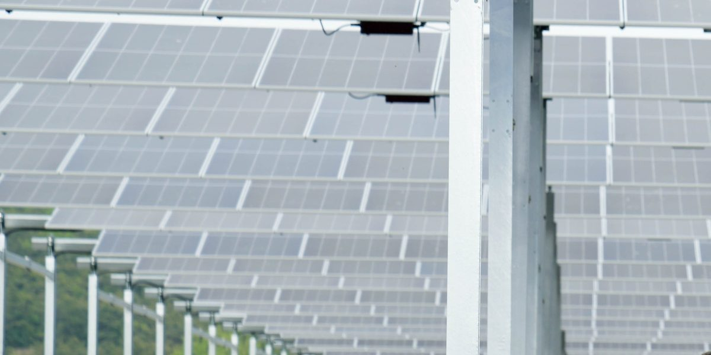

주민참여형 영농형 태양광, 이익은 주민 몫일까…팩트체크 결과 '절반의 사실'

안산 시민햇빛발전협동조합·영암 에너지자립마을은 수익 환원…소유 구조·투자 비율·수익 배분 조건이 성패 가른다
"주민참여형 영농형 태양광은 농가와 지역사회에 실질적인 이익이 돌아가는 상생형 사업"이라는 주장에 대해 언론 팩트체크에서 사례에 따라 절반만 맞는다는 '절반의 사실' 판정이 나왔다. 성공 사례로 꼽히는 안산시민햇빛발전협동조합은 시민 121명이 9,000만 원을 모아 출발해 지금은 조합원 약 2,300명, 출자금 약 130억 원, 발전소 46곳(약 6,700kW)으로 커졌고 2021년부터 6% 배당을 이어 왔으며, 전남 영암의 주민 주도 에너지자립마을 3곳도 약 80kW 설비로 연 1,580만 원가량을 벌어 공동 급식과 장학금에 쓰고 있다. 반면 경기도가 2024년 추진한 '경기햇빛농장' 시범사업은 신청이 양평 한 곳뿐이었고 일부 주민의 반대 속에 사업지를 확보하지 못해 무산됐는데, 신청 단계에서 소유·자금·수익 배분 조건이 분명하지 않았다는 지적이 나왔다. 농림축산식품부가 수도권 시범단지로 고른 화성(2.4ha·1MW)과 안성(2ha·1.2MW)은 한국농어촌공사 농지를 주민협동조합에 빌려주고 마을기금으로 이익을 나누는 구조지만, 장기 성과는 아직 검증되지 않았다. 협동조합을 만드는 것만으로 이익이 보장되지는 않으며, 소유 구조와 투자 비율, 대출·철거 책임, 수익 배분 조건이 실제로 누가 이익을 얻는지를 정한다.
시민에너지 관점
'주민참여'라는 이름이 붙었다고 주민이 곧 주인이 되는 것은 아니라는 판정은, 시민에너지 현장에서 오래 강조해 온 점과 맞닿아 있다. 안산과 영암처럼 주민이 지분과 의사결정을 함께 가질 때 수익이 지역에 남지만, 대출 책임과 배분 규칙이 흐릿하면 이름만 주민참여로 남을 수 있다. 영농형 태양광 제도를 설계할 때 주민 지분율과 수익 배분 원칙을 신청 단계부터 공개하도록 하는 방안을 검토해 볼 만하다.
정부와 지자체는 영농형 태양광 사업을 신청받을 때 소유 구조와 투자 비율, 대출·철거 책임, 수익 배분 조건을 표준 양식으로 공개하게 해야 한다. 경기햇빛농장처럼 조건이 분명하지 않아 무산되는 일을 막으려면, 사업을 공고하기 전에 이 조건들을 먼저 정해 주민에게 설명해야 한다. 화성과 안성 시범단지는 마을기금의 사용 내역과 성과를 해마다 공개해 장기 성과를 검증받을 수 있다. 농민과 주민은 안산과 영암 사례처럼 지분과 의사결정을 함께 갖는 구조인지부터 따져 보고 참여를 정할 수 있다.
출처: 단비뉴스(인천일보 팩트체크) 2026-10-09 추정현·김영래 원문 보기
住民参加型の営農型太陽光、利益は住民のものになるのか…ファクトチェックの結果は「半分は事実」
安山市民太陽光発電協同組合や霊岩のエネルギー自立村は収益を還元…所有構造・出資比率・収益配分の条件が成否を分ける
「住民参加型の営農型太陽光は、農家と地域社会に実質的な利益が戻る共生型の事業だ」という主張について、報道機関のファクトチェックは事例によって半分だけ当てはまる「半分は事実」と判定した。成功事例とされる安山市民太陽光発電協同組合は、市民121人が9,000万ウォンを集めて出発し、いまでは組合員約2,300人、出資金約130億ウォン、発電所46カ所（約6,700kW）にまで成長し、2021年から6%の配当を続けている。全羅南道霊岩の住民主導のエネルギー自立村3カ所も、約80kWの設備で年約1,580万ウォンを稼ぎ、共同給食や奨学金に充てている。一方、京畿道が2024年に進めた「京畿太陽光農場」モデル事業は、申請が楊平の1カ所だけで、一部住民の反対もあって事業用地を確保できずに頓挫し、申請段階で所有・資金・収益配分の条件がはっきりしていなかったと指摘された。農林畜産食品部が首都圏のモデル団地に選んだ華城（2.4ha・1MW）と安城（2ha・1.2MW）は、韓国農漁村公社の農地を住民協同組合に貸し、村の基金で利益を分ける仕組みだが、長期的な成果はまだ検証されていない。協同組合をつくるだけで利益が保証されるわけではなく、所有構造や出資比率、融資・撤去の責任、収益配分の条件が、実際に誰が利益を得るのかを決める。
市民エネルギーの視点
「住民参加」という名前が付いたからといって住民がすぐに所有者になるわけではないという判定は、市民エネルギーの現場が長く強調してきた点と重なる。安山や霊岩のように住民が持ち分と意思決定をともに持つとき収益は地域に残るが、融資の責任や配分のルールがあいまいなら、名前だけの住民参加に終わるおそれもある。営農型太陽光の制度を設計する際には、住民の持ち分比率と収益配分の原則を申請段階から公開させる方策を検討する価値がある。
政府と自治体は営農型太陽光の事業申請を受け付ける際、所有構造や投資比率、融資・撤去の責任、収益配分の条件を標準様式で公開させるべきだ。京畿太陽光農場のように条件があいまいなために頓挫することを防ぐには、事業を公告する前にこれらの条件をまず定め、住民に説明すべきだ。華城と安城のモデル団地は、村の基金の使い道と成果を毎年公開し、長期的な成果の検証を受けることができる。農民と住民は、安山や霊岩の事例のように持ち分と意思決定をともに持つ構造かどうかをまず確かめてから、参加を決めることができる。
出典: Danbi News (Incheon Ilbo fact-check) 2026-10-09 Chu Hyun-jeong, Kim Young-rae 原文を読む
居民参与型农光互补太阳能，收益能归居民吗？事实核查结论为"一半属实"
安山市民阳光发电合作社、灵岩能源自立村将收益回馈地方，所有权结构、出资比例和收益分配条件决定成败
"居民参与型农光互补太阳能是让农户和地方社会获得实际利益的共生型项目"这一说法，经媒体事实核查，被判定为视案例不同"一半属实"。被视为成功案例的安山市民阳光发电合作社由121名市民集资9,000万韩元起步，如今已发展到约2,300名社员、约130亿韩元出资、46座电站（约6,700kW），并自2021年起持续发放6%的分红；全罗南道灵岩的3个居民主导能源自立村也以约80kW的设备每年获得约1,580万韩元收入，用于公共供餐和奖学金。相反，京畿道2024年推进的"京畿阳光农场"示范项目只有杨平一处申请，又遭部分居民反对，最终未能确保用地而告吹，有人指出申请阶段的所有权、资金和收益分配条件并不明确。农林畜产食品部选定为首都圈示范园区的华城（2.4公顷、1MW）和安城（2公顷、1.2MW），采用将韩国农渔村公社农地租给居民合作社、通过村庄基金分享收益的结构，但长期成效尚未得到验证。仅仅成立合作社并不能保证收益，所有权结构、出资比例、贷款与拆除责任以及收益分配条件，才决定实际由谁受益。
市民能源视角
"居民参与"之名并不等于居民就成了主人，这一判定与市民能源一线长期强调的观点相呼应。像安山和灵岩那样，居民共同持有股份和决策权时，收益才会留在当地；如果贷款责任和分配规则模糊，居民参与可能只剩下名义。在设计农光互补制度时，不妨考虑要求从申请阶段就公开居民持股比例和收益分配原则。
政府和地方政府在受理农光互补项目申请时，应要求以标准格式公开所有结构、投资比例、贷款和拆除责任以及收益分配条件。为避免像“京畿阳光农场”那样因条件不明确而流产，应在发布项目公告之前先确定这些条件，并向居民说明。华城和安城的示范园区可以每年公开村基金的使用明细和成果，接受长期成效的检验。农民和居民可以先像安山和灵岩的案例那样，看清是否属于共同持有股份和决策权的结构，再决定是否参与。
来源: 단비뉴스(인천일보 팩트체크) 2026-10-09 추정현·김영래 查看原文
Do resident-participation agrivoltaics really pay residents? Fact-check rates the claim "half true"
Ansan citizen solar co-op and Yeongam energy self-reliance villages return revenue locally; ownership, investment shares and profit-sharing terms decide the outcome
The claim that resident-participation agrivoltaics are a win-win business that brings real benefits to farmers and local communities was rated "half true" by a media fact-check, depending on the case. A leading success, the Ansan Citizen Solar Cooperative, began with 121 citizens pooling 90 million won and has grown to about 2,300 members, about 13 billion won in member capital and 46 plants (about 6,700 kW), paying a 6% dividend since 2021, while three resident-led energy self-reliance villages in Yeongam, South Jeolla, earn about 15.8 million won a year from roughly 80 kW and spend it on shared meals and scholarships. By contrast, Gyeonggi Province's 2024 "Gyeonggi Sunlight Farm" pilot drew only one application, from Yangpyeong, and collapsed without a site amid opposition from some residents, with critics noting that ownership, financing and profit-sharing terms were unclear at the application stage. The agriculture ministry's metropolitan pilot sites in Hwaseong (2.4 ha, 1 MW) and Anseong (2 ha, 1.2 MW) lease Korea Rural Community Corporation farmland to resident cooperatives and share benefits through village funds, but their long-term results remain unproven. Forming a cooperative alone guarantees nothing; ownership structure, investment shares, loan and decommissioning liabilities and profit-sharing terms determine who actually benefits.
Citizen Energy View
The verdict that a "resident participation" label does not by itself make residents the owners echoes a point the citizen energy movement has long stressed. As Ansan and Yeongam show, revenue stays local when residents hold both equity and decision-making power, but if loan liabilities and distribution rules are vague, participation may remain in name only. In designing agrivoltaics policy, it would be worth considering a requirement to disclose resident equity shares and profit-sharing principles from the application stage.
When taking applications for agrivoltaic projects, the government and local authorities should require ownership structure, investment ratios, responsibility for loans and removal, and revenue-sharing terms to be disclosed on a standard form. To prevent failures like the Gyeonggi Sunlight Farm, where unclear terms sank the project, these conditions should be set and explained to residents before a project is announced. The Hwaseong and Anseong pilot sites could publish each year how their village funds are spent and what they achieve, so that their long-term results can be verified. Farmers and residents can first check whether a project gives them both equity and a say in decisions, as in Ansan and Yeongam, before deciding to join.
Source: Danbi News (Incheon Ilbo fact-check) 2026-10-09 Chu Hyun-jeong, Kim Young-rae Read the original